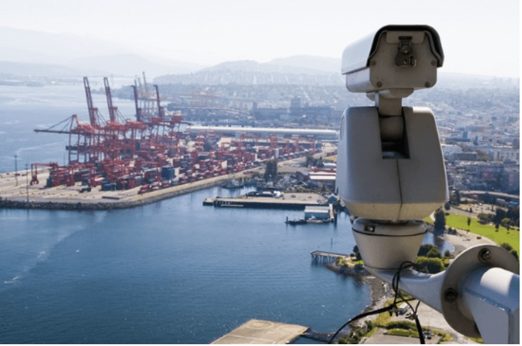
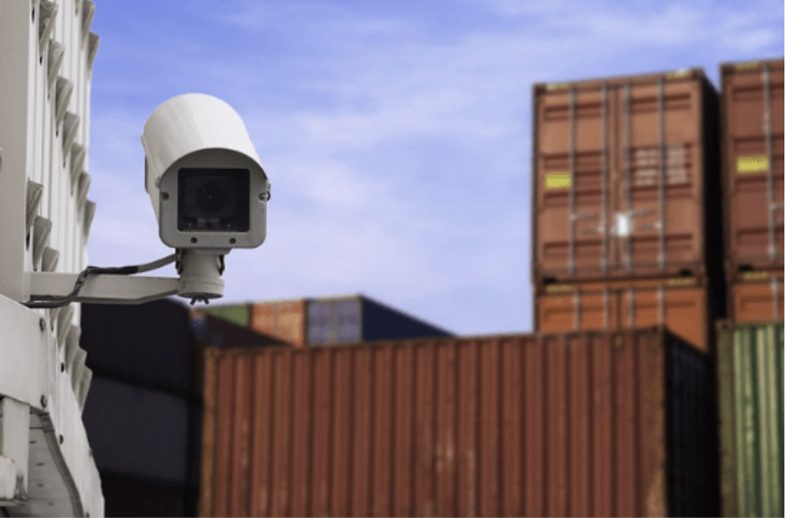
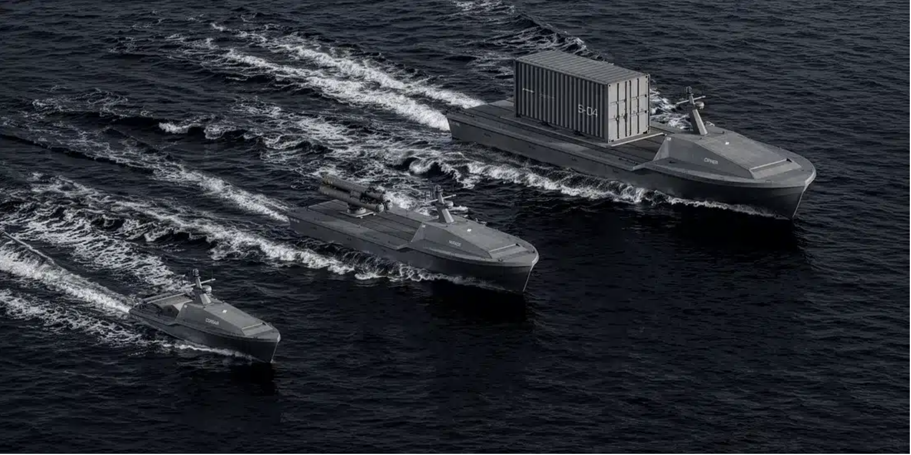
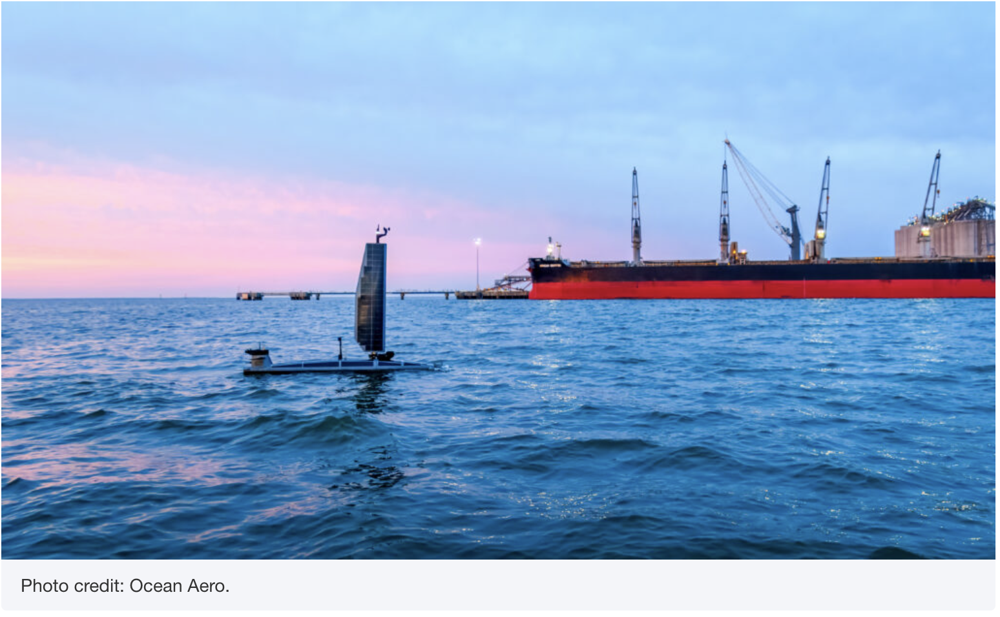

Maritime trade is the backbone of the global economy, and ports are under increasing pressure to deliver continuous safety, security, and operational continuity—yet persistent monitoring is still primarily done with crewed patrols and fragmented sensors. WaveShift targets this gap with practical autonomy designed for pilotable adoption.
Market Opportunity
Maritime infrastructure is not optional—it's the backbone of global trade and security.
The Market in One Line
Why This Market Is Real

Major global maritime shipping lanes and ports — the backbone of global trade. 80–90% of all international trade flows by sea.
Maritime Infrastructure Is Not Optional
Over 80% of global trade by volume moves by sea, making ports and waterways critical national and commercial infrastructure.
Disruption Risk Is Rising
UNCTAD has flagged chokepoints (e.g., major canals and corridors) as increasingly vulnerable to geopolitical and climate-driven disruptions, raising costs and straining supply chains. Ports are investing in resilience and continuity measures.
Monitoring Is Literally Written Into the Rules
Port facilities and ships operating internationally fall under the IMO's SOLAS/ISPS framework, and in the U.S. under MTSA/Coast Guard regulations—requirements that include monitoring access and activities and maintaining security communications.
Who Buys Maritime Monitoring
WaveShift is built for organizations that already have budgets and responsibility for maritime awareness:

Active container terminal operations illustrate the scale and complexity of modern port environments. Source: GCaptain - Port of Los Angeles Operations
Port authorities and port operators
Contract maritime security providers
Terminal and infrastructure operators
Defense-adjacent pilot organizations
Buyer reality: Most organizations won't start with "fleet procurement." They start with pilots that prove cost, coverage, reliability, and operator workflow in real conditions.
The Pain Today
The Coverage Problem
Ports must monitor wide areas, often 24/7, across shifting conditions (traffic, weather, incidents). Fixed cameras and sensors don't move, aerial drones don't persist, and crewed patrols are expensive to scale.
The Economics Problem
Crewing, fuel, maintenance, and shift coverage make persistent patrol costly. When budgets tighten, coverage drops—or gaps appear.
The Workflow Problem
Even when sensors exist, port teams often lack a single system that can persistently monitor, move to investigate, and keep a human operator in control.

Fixed port cameras and conventional monitoring systems are limited in coverage and mobility. Source: DSSL Ports Monitoring

Fixed port cameras and conventional monitoring systems are limited in coverage and mobility. Source: DSSL Ports Monitoring
Traditional port monitoring systems are fragmented — a single operator must integrate multiple disparate data streams.
WaveShift's wedge: Not "replace humans." Increase monitored hours per dollar while keeping humans in the loop.
The First Mission Scenario
WaveShift is deliberately narrowing scope for early traction.
Initial Mission: Port-Boundary Persistent Patrol & Anomaly Monitoring
- Patrol inside and immediately outside port boundaries
- Observe restricted zones and anchorages
- Detect unauthorized entry or loitering behavior
- Stream live video and telemetry to human operators
- Log events for review and compliance
Why this mission is the right wedge:
- Repetitive and measurable — perfect for pilots
- Maps to existing patrol budgets — not hypothetical spend
- Aligns with security/compliance expectations — monitoring obligations are clear

Autonomous surface vessels conducting monitoring and patrol tasks near port infrastructure. Source: Naval News - SARONIC ASVs

Advanced ASV technology for continuous port security monitoring. Source: Ocean Science Technology - AUSV Security
Images shown are industry examples of autonomous surface vessels used for monitoring and patrol contexts, not WaveShift platforms.
Market Size
WaveShift sizes the market based on regulated, existing demand — not speculative future autonomy.
Ports are globally distributed (IAPH represents 190 ports across 89 countries), and maritime security spend is estimated in the tens of billions annually. WaveShift's SAM is intentionally constrained to commercial ports and near-shore monitoring — the subset where pilots are feasible and adoption can happen on operational timelines.
✓ Included in WaveShift's SAM
- Commercial ports and port-adjacent infrastructure
- Coastal and near-shore monitoring missions
- Monitoring-first, non-weaponized systems
- Human-in-the-loop operations
- Pilot-based adoption pathways
✗ Explicitly Excluded (Initial Phase)
- Weapons or kinetic payloads
- Blue-water naval or combat missions
- Fully autonomous, no-operator deployments
- Highly classified or strategic ISR use cases
- Multi-year defense procurement programs
WaveShift's near-term market is intentionally constrained to enable fast pilots, clear economics, and low-friction adoption.
Industry Context
The global maritime security market reflects strong structural demand across port infrastructure, coastal surveillance, and vessel protection. This benchmark data provides market context for WaveShift's positioning.
Global Maritime Security Market Size, 2025 – 2032

Context: This reflects the broader maritime security market across all segments. WaveShift targets a focused subset: non-weaponized, monitoring-first autonomous surface systems for port and near-shore operations.
Source: Persistence Market Research (2025–2026)
Why Now
Several structural and economic trends are converging to make persistent maritime monitoring an immediate operational priority—not a future concept.
Higher Stakes for Resilience
Maritime routes face sustained disruption risk. Recent incidents show persistent, asymmetric interference targeting critical infrastructure.
Pressure to Improve Port Efficiency
Operational disruptions translate directly into delays, rerouting, and lost throughput. Risk manifests as operational inefficiency.
Clear Regulatory Expectations
Monitoring is embedded in international frameworks. Maritime security obligations are recurring, not temporary.
Adoption Readiness
Operators are adapting behavior and pricing risk. Risk is quantified and priced, enabling incremental adoption.
Why This Matters for WaveShift
Ports and maritime operators are under pressure to:
- Increase monitored coverage without scaling crews
- Reduce disruption-driven delays and rerouting
- Meet ongoing regulatory and security expectations
- Adopt solutions that are incremental, measurable, and deployable on operational timelines
WaveShift is designed for this moment: monitoring-first autonomy that integrates with existing workflows and proves value through pilots, not wholesale replacement.
Competitive Landscape: Where WaveShift Fits
Ports today typically assemble monitoring from:
- AIS and software dashboards
- Fixed cameras and radar networks
- Crewed patrol boats and contractors
- Limited drone programs (short endurance)
WaveShift's complementary layer:
- Mobile and persistent — Patrols, investigates, maintains evidence trail
- Human-in-the-loop from day one — Faster adoption, clearer accountability
- Modular architecture — Integrates with existing port systems
WaveShift does not compete with existing sensors or patrol assets; it increases the return on those investments by extending coverage and persistence.
Why This Gap Persists
Ports have invested heavily in sensors and personnel, but persistent mobile monitoring remains a gap because:
- Fixed infrastructure cannot move to investigate anomalies
- Crewed patrols do not scale economically to 24/7 coverage
- Aerial drones lack endurance and require frequent intervention
- Autonomy in regulated environments demands human-in-the-loop workflows
WaveShift is designed specifically to close this gap without forcing ports to replace existing systems or operating procedures.
What "Winning" Looks Like for Customers
WaveShift's pilots are designed around outcomes that ports and security operators already understand:
More Coverage Per Dollar
More hours of monitored coverage for the same or reduced operational cost
Faster Detection
Faster detection-to-investigation response times
Reduced Workload
Reduced operator workload through intelligent workflow tooling
Reliability
Higher uptime and repeatability vs. ad-hoc patrol schedules
This keeps the sales conversation grounded in operational reality: budgets, staffing, coverage, and compliance.
Market Summary
WaveShift is entering a market that is:
- Large — Global maritime dependence is structural
- Budgeted — Security and patrol are ongoing spend; industry estimates validate magnitude
- Regulated — Monitoring expectations exist in ISPS/MTSA frameworks
- Ready for pilots — Incremental adoption beats "big bang" procurement
WaveShift's wedge is intentionally narrow: Port-boundary persistent monitoring—the fastest path to proving value, trust, and expansion.
Sources & References
Sources provided for context and validation. Market sizing reflects conservative, directional estimates.
Shipping Data: Seaborne Trade Statistics
Port Performance Varies Across the Globe Amid Continuing Shocks
Review of Maritime Transport 2025
Maritime Security Market Analysis
Maritime Security Market Report
International Association of Ports and Harbors
Code of Federal Regulations - MTSA Requirements
ISPS Code and MTSA Implementation
SOLAS XI-2 & ISPS Code
Tariffs & Conflict Causing Major Volatility in Shipping Industry